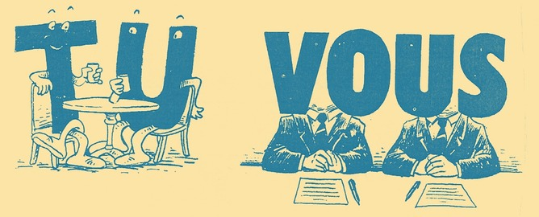

A while ago, I reported a bug report to Apple (Radar 13833235) reporting that there didn't seem to be any public documentation about how non-English localizations of Apple apps should address the user. While English doesn't distinguish between formal and informal senses, other languages certainly do. I wanted to make sure that Sandvox and any future apps are doing it the right way.
Unfortunately, Apple's reply in the bug report was to direct me to an internal Apple-only web page. Not too helpful.
When I pointed that out, they didn't take any steps to solve the issue, but instead they apparently just copied the text for me.
So that's annoying — I know the official Apple style for this, but nobody else gets to know?
So that's why I have this post. I won't copy the post verbatim, since I don't want to be copying their intellectual property. But a summary ought to be of some use.
They sent me guides for French and German. Since these guides are not consistent with each other, I guess that means that if you are dealing with other languages, you have to figure out the right sense yourself.
French
- Be formal — vous, not tu
- OK to use French expressions, but not slang
- Unusual to greet users by their first name; use Cher Monsieur or Chère Madame.
- Avoid personal pronouns; in English we might say "your battery"; French would just translate to la batterie.
German
- "We are direct and friendly … that's why we avoid the formal Sie … and instead use the informal du”
OK, Wait! So we use the formal in French but the informal in German? Wow.
- Use lowercase du since you are addressing a group of people
- But address educators with Sie. (Probably not really applicable for app localization).
If you’ve noticed how Apple addresses its app users in other languages, feel free to mention that in the comments here. Perhaps this page will be useful for other developers.